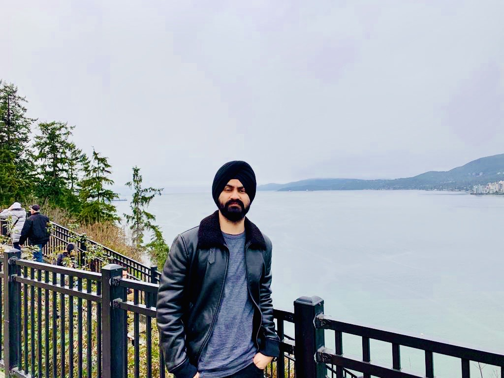

Mridul Singh
A results-driven marketer who is passionate about marketing at startups.I love being creative and wearing many hats and have 5 years of experience in performance marketing, email marketing, lead generation, product marketing, conversion rate optimization (CRO), search engine optimization (SEO), and social media marketing. I enjoy taking on big challenges and building highly effective internet marketing programs from the ground up.
Expereince
Dell
Product and Marketing Consultant
- Conduct market research analysis to identify search query trends, real-time search and news media activity, popular social media topics, electronic commerce trends, market opportunities, or competitor performance.
- Conduct financial modelling for online marketing programs or Web site revenue forecasting.
HP
Product and Marketing Consultant
- Conduct market research analysis to identify search query trends, real-time search and news media activity, popular social media topics, electronic commerce trends, market opportunities, or competitor performance.
- Conduct financial modelling for online marketing programs or Web site revenue forecasting.